ggplot2 exercises part 2
Kirill Müller
Reverse-engineering, theory
How could the authors of the 2016 WHO TB report have created the following plots? Assume that each plot is based on one or several suitably crafted dataset(s), i.e., that the data has been transformed in advance to support this particular plot. Answer the following questions for each plot:
- What layers (geoms) are used?
- Which variables are mapped to which aesthetics?
- Can you identify manual aesthetics (i.e., aesthetics that are unchanged for all observations?)
- What statistical transformations, if any, have been applied?
- What positional adjustments, if any, have been applied?
- If an image contains more than one graph, explain the mechanism.
- What does each observation in the plotting dataset represent?
- Do you notice details about the plot which you can’t explain yet?
Plot 1
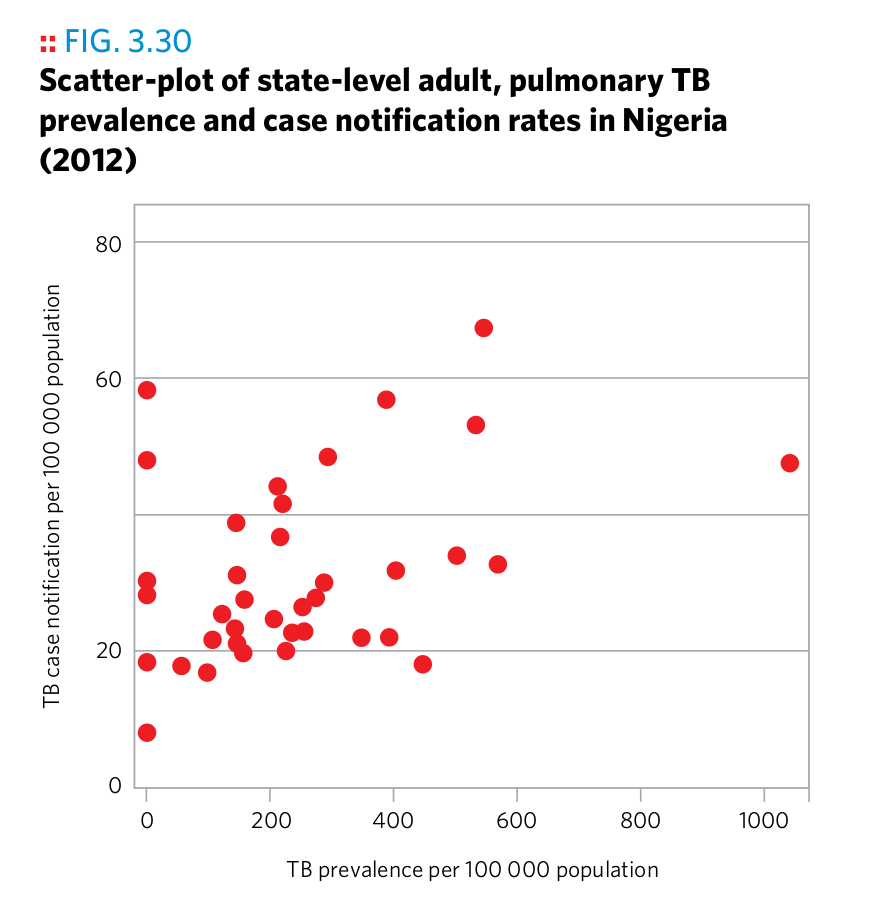
Plot 1
Plot 2

Plot 2
Plot 3

Plot 3
Plot 4

Plot 4
Plot 5

Plot 5
Plot 6

Plot 6
Plot 7

Plot 7
Plot 8

Plot 8
Plot 9

Plot 9
Plot 10
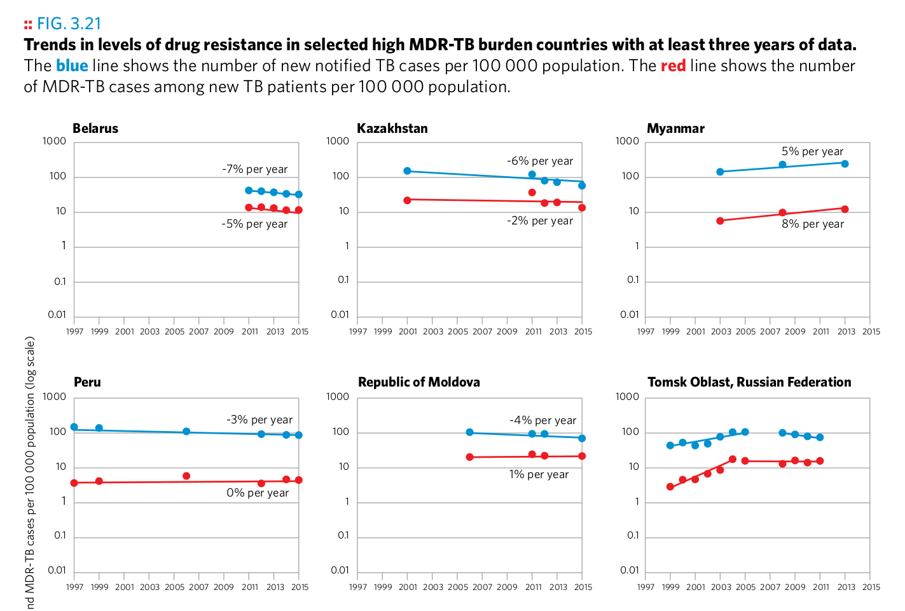
Plot 10
Plot 11
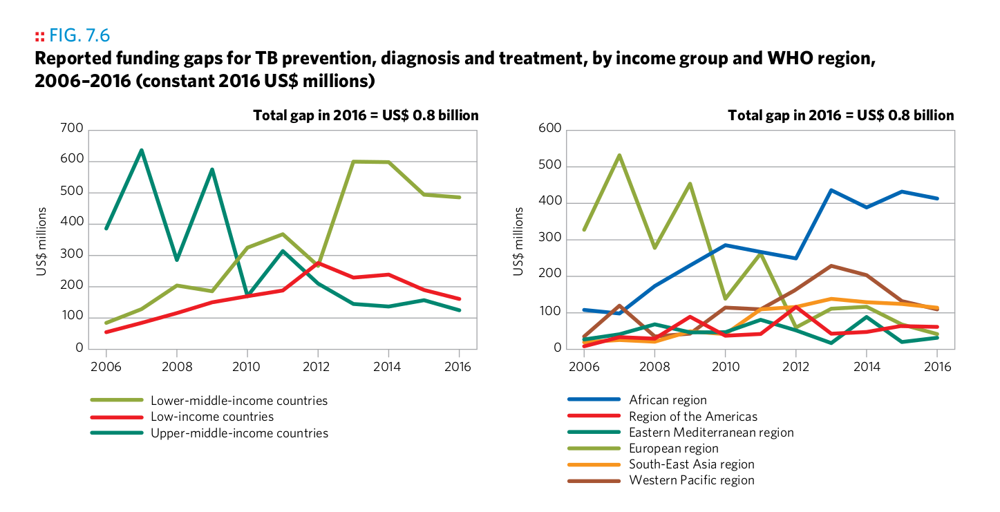
Plot 11
Plot 12
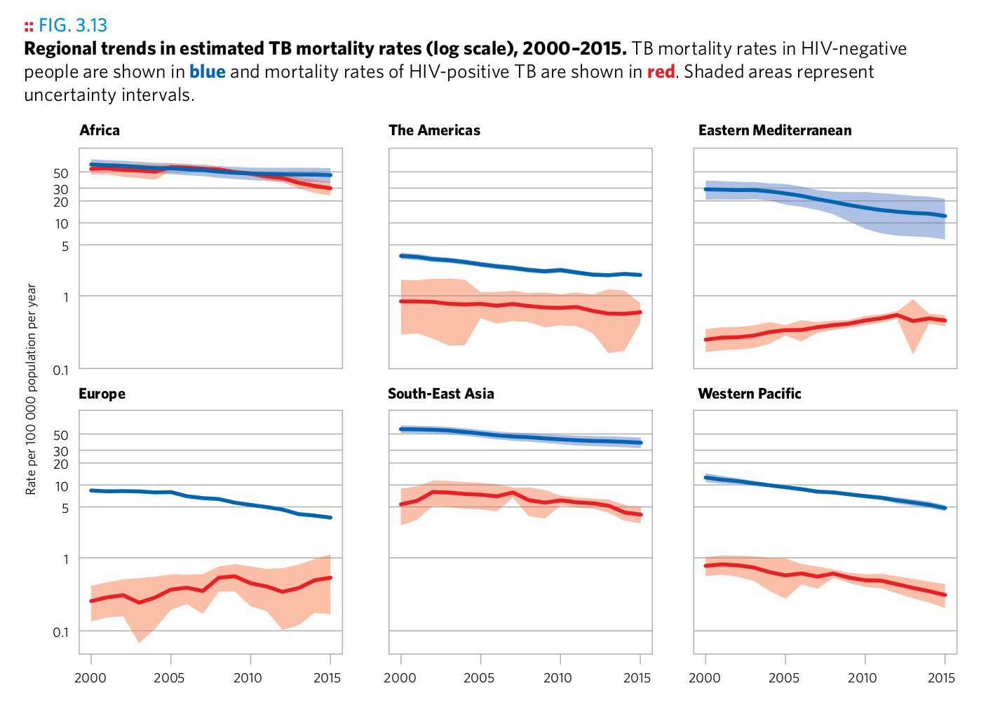
Plot 12
Plot 13
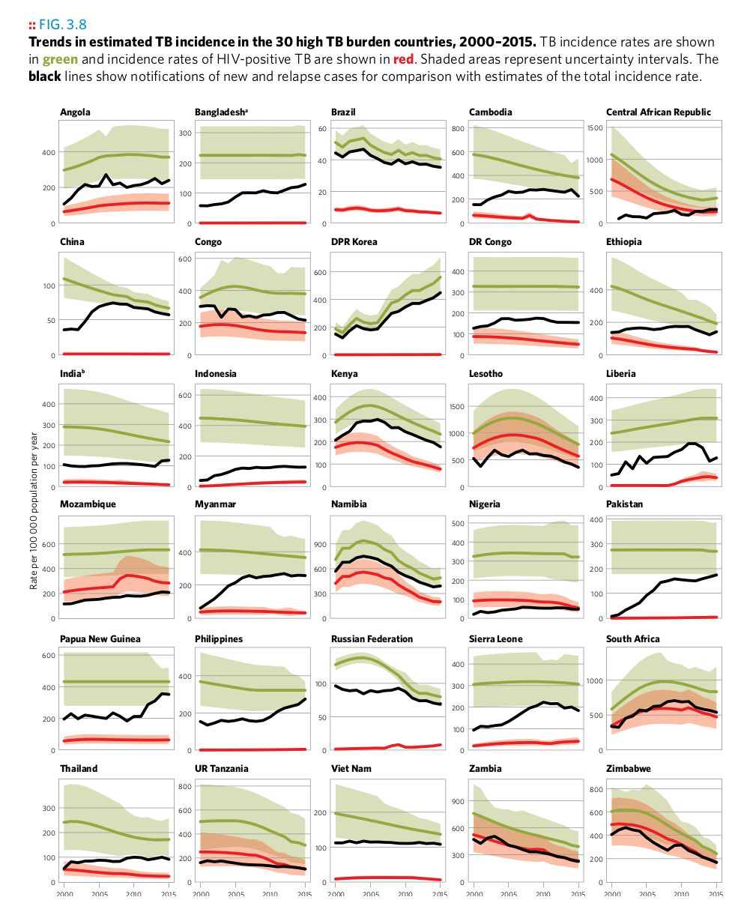
Plot 13
Plot 14
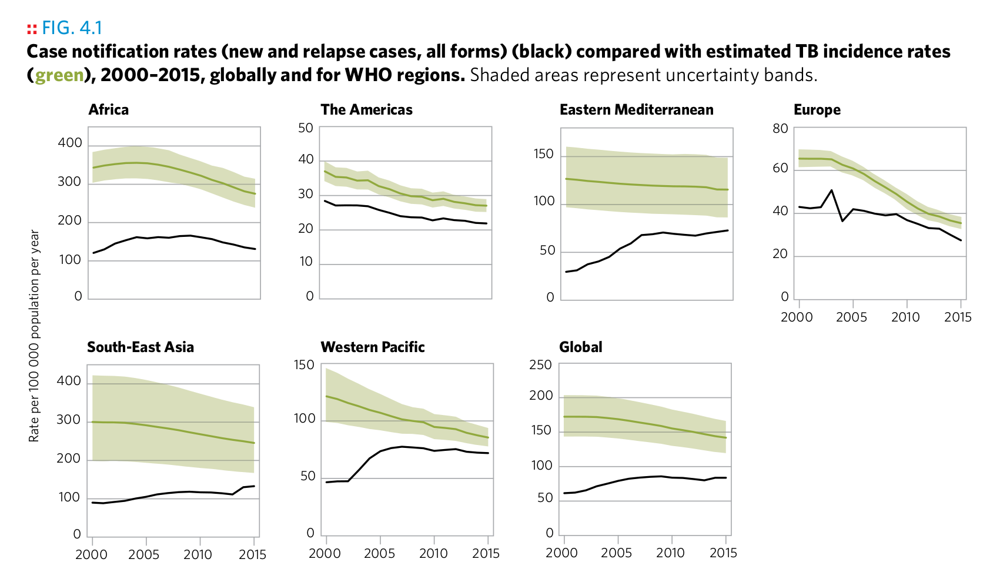
Plot 14
Plot 15
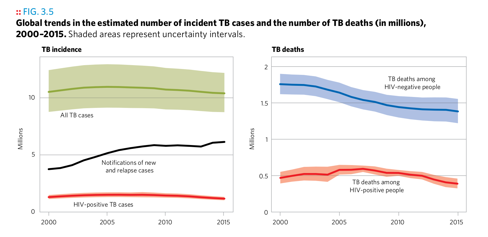
Plot 15
Plot 16
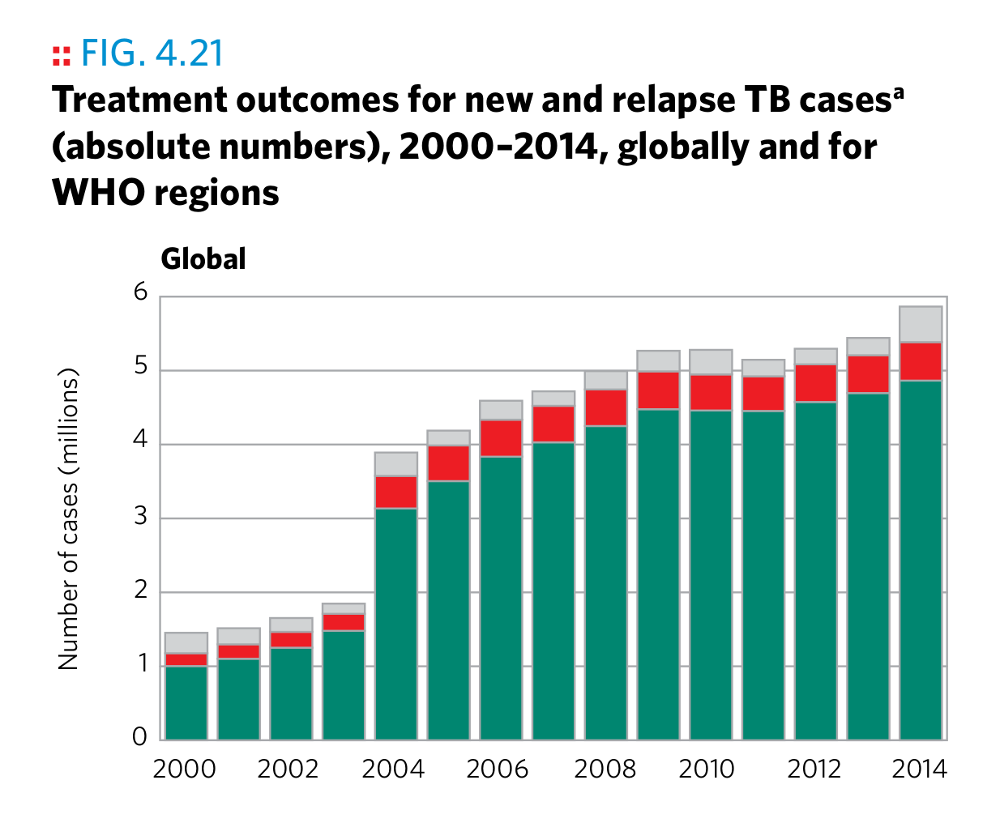
Plot 16
Plot 17

Plot 17
Plot 18
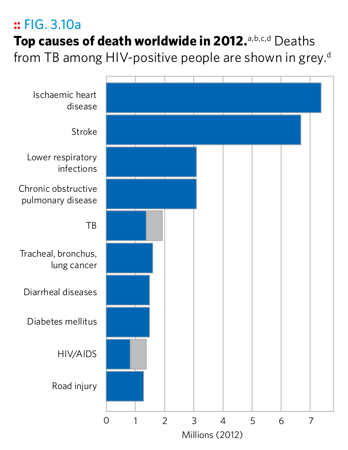
Plot 18
Plot 19

Plot 19
Plot 20
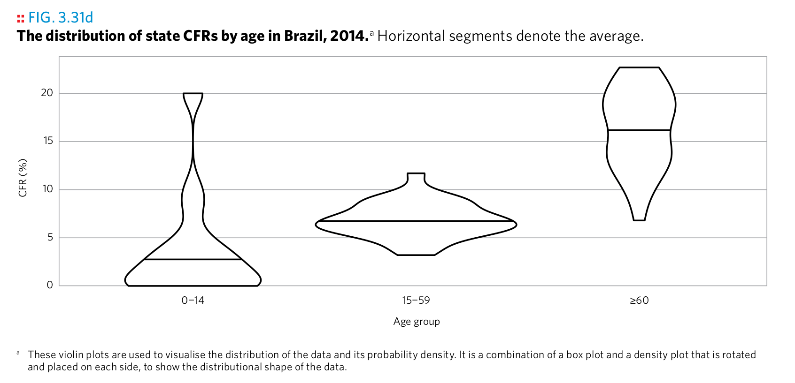
Plot 20
Plot 21
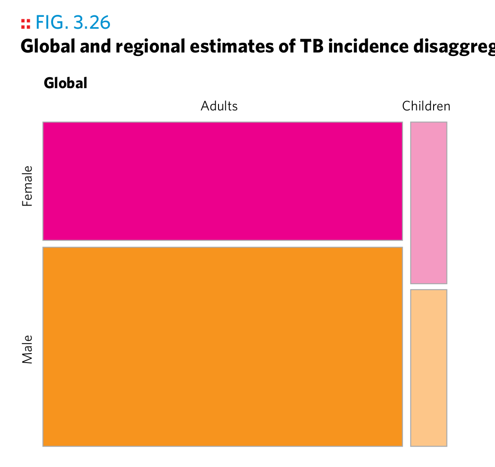
Plot 21
Copyright © 2018 Kirill Müller. Licensed under CC BY-NC 4.0.